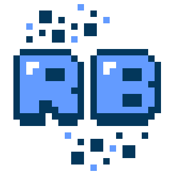
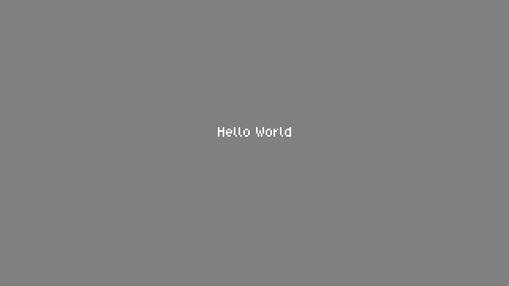
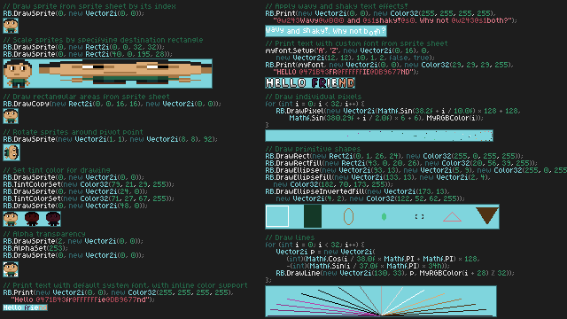
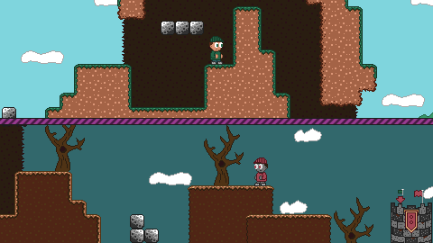
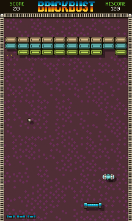
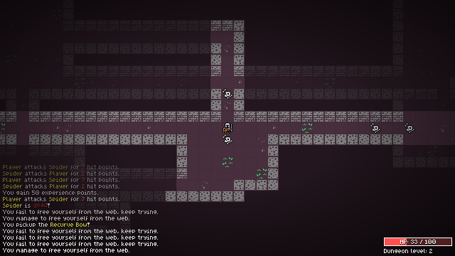
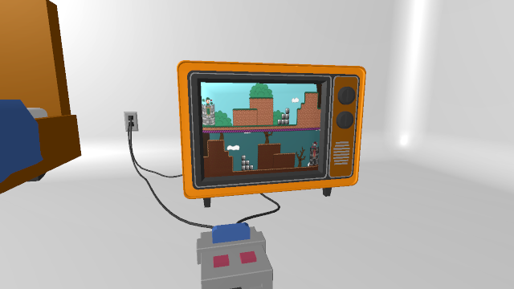

|
|
Documentation
v3.2.0 |
|
|

v3.2.0 Welcome to the RetroBlit game framework!RetroBlit is a simple to use game framework implemented as a Unity Asset. It aims to create an ideal, low friction environment for making pixel-perfect retro games from the early 90s era. RetroBlit takes advantage of the portability, and the ease of deployment that Unity provides, but does away with the Unity Editor interface in favour of a traditional game loop, and code-only development. There are no scene graphs, no GameObjects, no MonoBehaviour, there is only a simple low level API for rendering sprites, fonts, primitives, and tilemaps. RetroBlit also provides a simple API for handling input and playing sound and music. Have a look at this basic "hello world" program:
Let's have a closer look at what is happening here.
Every RetroBlit game implements the IRetroBlitGame interface, which contains the methods: QueryHardware, Initialize, Update and Render
The QueryHardware implementation simply populates the HardwareSettings structure and returns it back to RetroBlit. In this case we are specifying that our retro display should have the resolution 320 x 180.
In the Initialize method the RetroBlit game can perform its initialization. If it's successful it should return true. If false is returned RetroBlit will stop.
Game logic goes into the Update method which is called at a configurable fixed frame rate. However, in this simple program we don't have any logic to run.
Render is where all drawing happens. Here we simply clear the screen to gray, and print the string "Hello World" in the center of the display, using the default RetroBlit system font. There is only one thing left, and that is to tell RetroBlit about our game. To do that we simply need to call RB.Initialize from a MonoBehaviourGameObject (the only MonoBeahviour object you'll need with RetroBlit!). Simply use this code:
That's it! Press Play in the Unity Editor, and you should see this output:

You just made a pixel perfect Hello World game in Unity, without fiddling with camera settings, messing around with texture filters, or dealing with an overwhelming interface that was never designed for creation of retro style pixel perfect games. RetroBlit comes with a bare-bones game that you can use as a starting template. Please see Assets/RetroBlit/Scenes/MyGame Scene and the Asssets/RetroBlit/Scripts/MyGame/MyGame.cs source file. More ExamplesHello World examples are great, but they're not very impressive are they? RetroBlit comes with some more entertaining example projects. Each demo project has its own Scene, have a look at the Scenes in Assets/RetroBlit/Scenes. Here is a quick preview:

Feature Demo Reel in Scene Assets/RetroBlit/Scenes/DemoReel and source file Assets/RetroBlit/Scripts/Demos/DemoReel/DemoReel.cs

Super Flag Run in Scene Assets/RetroBlit/Scenes/SuperFlagRun and source file Assets/RetroBlit/Scripts/Demos/SuperFlagRun/SuperFlagRun.cs

BrickBust! A Complete bricker-breaker game in Scene Assets/RetroBlit/Scenes/BrickBust and source file Assets/RetroBlit/Scripts/Demos/BrickBust/BrickBustGame.cs

Retro Dungeoneer, a complete roguelike game, find it in Scene Assets/RetroBlit/Scenes/RetroDungeoneer and source file Assets/RetroBlit/Scripts/Demos/RetroDungeoneer/RetroDungeoneerGame.cs

RetroBlit allows you to get a hold of it's rendering texture, and render it yourself in a Unity Scene, find an example of that in Assets/RetroBlit/Scenes/OldDays and source file Assets/RetroBlit/Scripts/Demos/OldDays/OldDays.cs What's Next?Learn more about the RetroBlit feature set by exploring the Features section. If you've never used Unity before don't worry! You only need a very basic knowledge of the Unity IDE which you can learn in the Unity Crash Course section. If you need API details check out the API Reference. You can also have a look at the RetroBlit API directly in the RetroBlit/Scripts/RetroBlit.cs source file. |